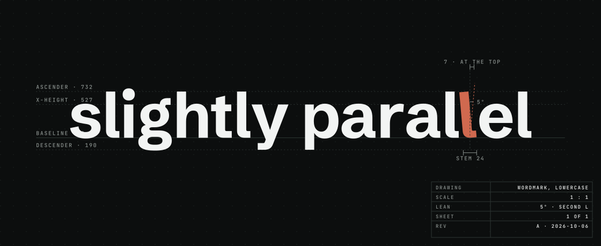

Self-hosted · one laptop · every chat, task and decision of your agents
Slightly Parallel records what Claude Code, Codex and OpenCode do across your projects — the chats as written, the tasks they move, the scans, standups and decisions they write — and shows it on pages. One person, one machine, no database server: the records are files.

Parallel rails, seen in perspective, do not look parallel. The mark is two stems with the second leaning five degrees, and the second l of the name leans the same way.
Each container is a kind of entry: scan, standup, decision, sprint, task, chat. The jade one is the product's own colour.
git clone https://github.com/nmar33/slightly-parallel cd slightly-parallel ./run.sh --prod# the app on http://127.0.0.1:8123
Python 3.11+ and Node 20+. The first start fills a data folder outside the clone with demo data; Setup then integrates your projects — it writes the hooks, the MCP entry, one section of AGENTS.md and a line in CLAUDE.md, and removes them on request. English or Russian interface. Linux and macOS; on Windows through sp.cmd.